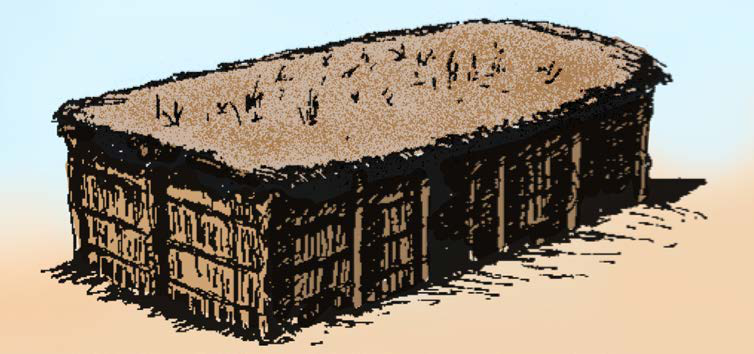
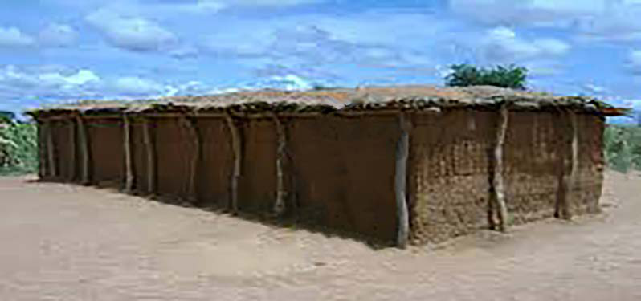

Nyumba za tembe
Nyumba za tembe zilijengwa kwa kutumia miti iliyosukwa kwa kamba na fito, kisha kukandikwa kwa udongo ili ziwe imara. Nyumba hizi hushikiliwa na nguzo imara. Nyumba za tembe huezekwa nyasi na miti, kisha kukandikwa kwa udongo juu. Nyumba hizi zilikuwa fupi na zenye umbo la mstatili. Nyumba za tembe zilijengwa na jamii zilizoishi mkoa wa Dodoma, Singida na Manyara. Dodoma zilijengwa na jamii za Wagogo, Singida na jamii za Wanyaturu na Wanyiramba na Manyara na jamii za Wairaqw. Kielelezo namba 12, 13 na 14, vinaonesha mfano wa nyumba za tembe.


36